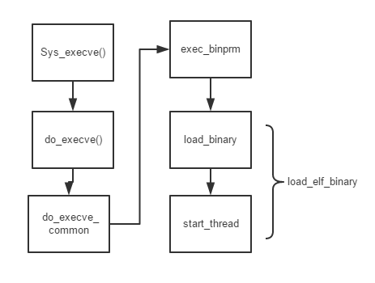
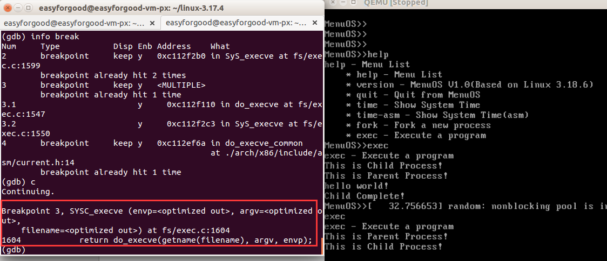
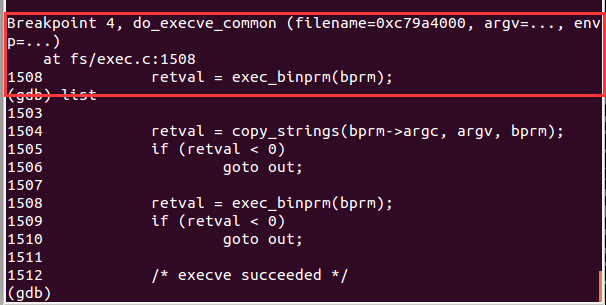
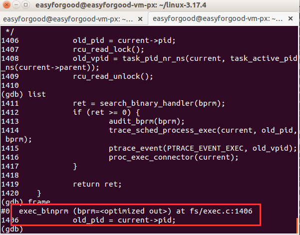
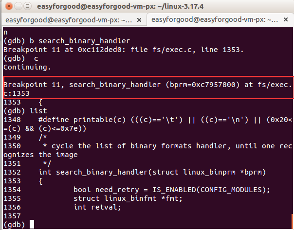
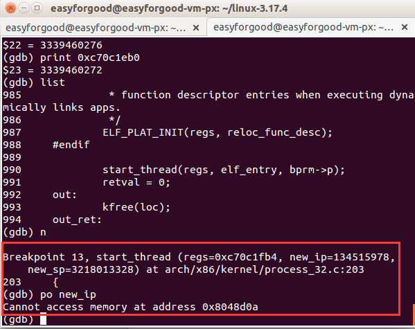
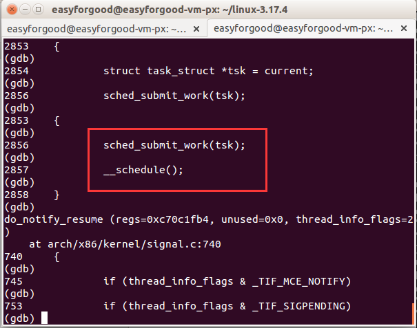

gcc -E -o hello.cpp hello.c -m32 //预处理
gcc -x cpp-output -S -o hello.s hello.cpp -m32 //编译
gcc -x assembler -c hello.s -o hello.o -m32 //汇编
gcc -o hello hello.o -m32 //链接
gcc -o hello.static hello.o -m32 -static //静态链接
分成三种：
可重定位的对象文件(Relocatable file)
可执行的对象文件(Executable file)
可被共享的对象文件(Shared object file)
elf文件主要包括了：
ELF header : elf头部，基本信息
Program header table 执行文件信息;只出现在执行文件中.
Section data ： Section的实际数据;一些section有特殊的含义
Section headers ： 每个section的header
装载ELF的目的一般是确定各个区域的边界：text区的起始和终止位置，data区的起始
和终止位置，bss区的起始和终止位置，heap和stack的起始位置（它们的终止位置是 动态变化的）。还有就是把text区和data区的内容做mmap映射：ELF文件的内容不会 被 真地拷贝到内存，只有当真正需要的时候，内核才会通过page fault的形式把文件 存复制到内存中去。
与 Unix类似，Linux 中的程序和命令通常由命令解释器执行，这一命令解释器称为 shell。用户输入命令之后，shell 会在搜索路径（shell 变量PATH中包含搜索路径）指定的目录中搜索和输入命令匹配的映象（可执行的二进制代码）名称。如果发现匹配的映象，shell 负责装载并执行该映像。shell 首先利用 fork 系统调用建立子进程，然后用找到的可执行映象文件覆盖子进程正在执行的 shell 二进制映象。
当用户敲入一个命令时，从shell可以接受一些命令行参数
int main(int argc, char *argv[], char *envp[]) argc 为参数个数，argv为传递的字符串，envp为环境变量
整体流程简介：

系统调用execvlp()系统调用首先会进入Sys_execve()
然后由Sysexecve()->doexecve()->docommonexecve()


docommonexecve() 从目标文件的头部(从第一个字节开始)读入若干(128)字节，然后调用另一个函数searchbinaryhandler()，在那里面让各种可执行程序的处理程序前来认领和处理。内核所支持的每种可执行程序都有个struct linuxbinfmt数据结构，通过向内核登记挂入一个队列。而searchbinary_handler()，则扫描这个队列，让各个数据结构所提供的处理程序、即各种映像格式、逐一前来认领。如果某个格式的处理程序发现特征相符而，便执行该格式映像的装入和启动。
execbinprm() -> searchbinary_handler ()


#define load_elf_binary load_elf32_binary
static struct linux_binfmt elf_format = {
.module = THIS_MODULE,
.load_binary = load_elf_binary,
.load_shlib = load_elf_library,
.core_dump = elf_core_dump,
.min_coredump = ELF_EXEC_PAGESIZE
};
在 searchbinaryhandler()中执行 fmt->loadbinary(bprm) 便进入 loadelf_binary
（这里采用了观察者模式，虽然是一个很好的设计，但是对于阅读代码而言，带来了很多阻碍，因为你不知道到底调用的是哪个具体的处理函数）
在loadelfbinary 中主要是找到elf_entry和bprm->p
如果应用程序中使用了动态链接库，就没有那么简单了，内核除了加载指定的可执 行文件，还要把控制权交给动态连接器(program interpreter，ld.so in linux)以处理动态 链接的程序。内核搜寻段表，找到标记为PTINTERP的段中所对应的动态连接器的 名称，并使用loadelfinterp()加载其映像，并把返回的入口地址设置成loadelf_interp ()的返回值，即动态链接器入口。当execve退出的时候动态链接器接着运行。动态连 接器检查应用程序对共享连接库的依赖性，并在需要时对其进行加载,对程序的外部 引用进行重定位。然后动态连接器把控制权交给应用程序，从ELF文件头部中定义 的程序进入点开始执行。
一个是newip 一个是newsp
最后调用 start_thread()

void start_thread(struct pt_regs *regs, unsigned long eip, unsigned long esp)
{
PT_REGS_IP(regs) = eip;
PT_REGS_SP(regs) = esp;
current->ptrace &= ~PT_DTRACE;
}
给pt_regs结构体赋值。
struct pt_regs *regs = current_pt_regs();
在前面可以发现，这个ptregs 就是指向当前进程的进程状态段（threadinfo）的pt_regs
最后进行系统调用即可

（不知道 为什么退出sysexecve()会进入core.c中的schedule函数，不应该是在syscallexit中进行调用的吗？）
之前的fork只是创建了父进程的拷贝，但是还是运行父进程的代码，但那时execve（）却替换了子进程的函数调用栈和修改了eip的指向。
为什么庄生梦蝶？
我有一种感觉就是如果一个进程不断execve()自己本身，就像自己不断在做梦，然后梦见自己不断在做梦，这样不断循环的感觉。但实际上，每一个都不是原来的自己了。。 （越说越乱了。。。）